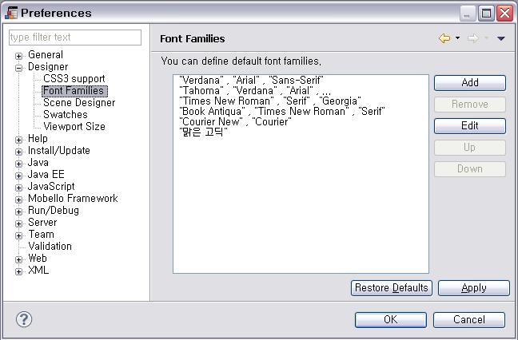
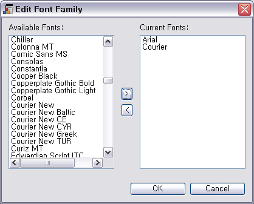
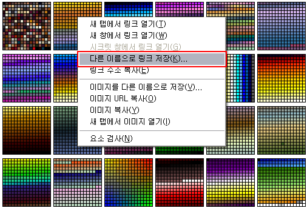
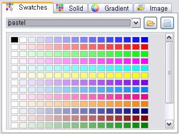
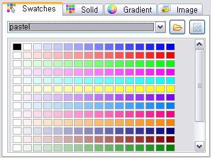
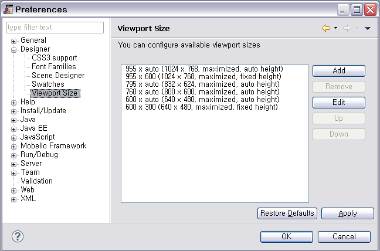
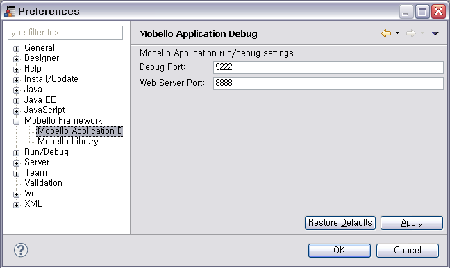
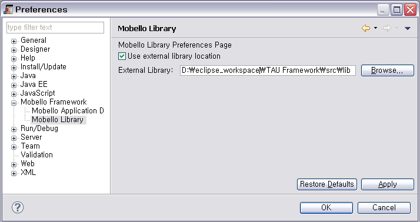

메뉴에서 Window > Preferences를 선택 하면 모벨로 스튜디오의 Preference 페이지를 볼 수 있습니다.
해당 Preference 페이지에서는 스튜디오의 전반적인 기능을 설정할 수 있습니다.
본 문서에서는 모벨로 스튜디오의 주요 preference인 Designer Preference와 Mobello Framework Preference를 소개합니다.
Designer Preference

- Snap to snap-line – 컴포넌트의 배치시 snap-line 이 나타나 정렬을 도와 줍니다.
- Default margin – Snap to snap-line 적용시 컴포넌트간의 기본 정렬 간격을 설정합니다.
- Default padding – Snap to snap-line 적용시 상위 container 와의 기본 정렬 간격을 설정합니다.
- Align threshold – Default margin 과 Defaut padding 이 적용되는 범위를 설정합니다. 값을 크게 하면 snap-line 정렬이 쉽게 적용 됩니다.
CSS3 Support
Gradient나 Border-radius 처럼 각 브라우저별로 그 문법이 다른 경우 지원하고자 하는 문법체계를 선택하여 생성할 수 있습니다.

- W3C CSS3 syntax – 표준 CSS3 규격이나 아직 미지원 되는 브라우저가 많습니다.
- webkit style syntax – Webkit 기반의 브라우저(Chrome, Safari)를 위한 규격입니다.
- mozilla style syntax – Mozilla Firefox 브라우저를 위한 규격입니다.
- IE style syntax – Internet Explorer 브라우저를 위한 규격입니다.
Font Families
스튜디오에서 사용 될 기본 폰트를 설정할 수 있습니다.

- Font 추가 – Add 버튼 을 선택합니다. Available Fonts 중 사용하고자 하는 폰트를 1개이상 선택하고 > 버튼 을 선택한 후 OK 버튼 을 선택합니다.

- Font 수정 – Edit 버튼 을 선택하면 Font Family를 수정할 수 있습니다.
- Font 삭제 – Remove 버튼 을 선택하면 Font Family를 삭제할 수 있습니다.
Scene Designer
디자인 에디터의 페이지 탭 생성 여부를 설정합니다.

- source/design page – 팔레트를 이용하여 디자인을 할 수 있는 영역인 Design페이지와 텍스트 타입으로 디자인이 가능한 Source 페이지가 한 화면에 나타나는 페이지 입니다.
- source page – 텍스트 타입으로 디자인이 가능한 페이지 입니다.
Swatches
QuickStyler나 Attributes 뷰에서 사용 될 기본 Swatch를 설정할 수 있습니다. Swatch는 색상 선택 시 Swatches 탭에 나타나는 색상 리스트 입니다.

원하는 팔레트에서 오른버튼을 선택합니다. "다른 이름으로 링크 저장" 버튼을 선택하면 해당 팔레트가 다운로드 됩니다.

- Swatch 추가 – Add 버튼 을 선택하여 다운로드받은 파일을 추가하면 즉시 사용이 가능합니다.
 

- Swatch 삭제 – Remove 버튼 을 선택하면 Swatch를 삭제할 수 있습니다.
Viewport Size
Visual Designer 의 툴바에서 선택 가능한 viewport size 를 편집할 수 있습니다.

툴바에서 viewport size 를 선택하면 design 영역의 크기가 해당 viewport size 로 변경됩니다.

Mobello Framework Preference
Mobello Application Debug
디버깅과 에뮬레이터 실행을 위한 포트번호를 설정할 수 있습니다.

- Debug Port – 디버깅을 위한 포트 번호
- Web Server Port – 에뮬레이터 실행을 위한 포트 번호
Mobello Library
모벨로 스튜디오에 내장된 라이브러리 이외의 최신의 라이브러리를 사용하고자 할 경우 다음 페이지에서 설정할 수 있습니다.
